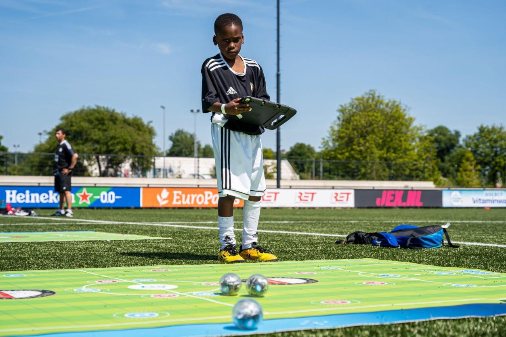

Een interactief beweegspel voor Feyenoord
In dit project werk je als industrieel ontwerper (design for interaction) aan een interactief beweegspel voor het Schoolsport Plus-programma van Feyenoord. Je combineert bewegen, spel en moderne technologie om kinderen in Rotterdam-Zuid met plezier in beweging te brengen.
Project in het kort
- Opdrachtgever: Feyenoord Foundation
- Beroep: Industrieel ontwerper – design for interaction
- Doelgroep: Kinderen in groep 5 t/m 8 in Rotterdam-Zuid
- Product: Interactief beweegspel dat mee kan in de citkar of maatbus
- Eindproduct: Prototype + handleiding + eindpresentatie
| Opdrachtgever | Beroep | Type project | Bètatechnische wereld |
|---|---|---|---|
| Feyenoord (Feyenoord Foundation) | Industrieel ontwerper, design for interaction | Ontwerp | Digitaal, Media & Entertainment · Mens & Gezondheid |
1. De opdrachtgever: Feyenoord Foundation
De Feyenoord Foundation wil met haar sociaal-maatschappelijke programma’s levens veranderen.
Met sport en spel willen zij:
- Mensen in beweging brengen
- Bijdragen aan een betere toekomst voor inwoners van Rotterdam-Zuid
- Sport inzetten als middel om de sociaal-emotionele ontwikkeling te stimuleren
Twee belangrijke programma’s zijn:
- Schoolsport Plus – dagelijks sport- en spellessen op scholen, met extra aandacht voor bewegen en een gezonde leefstijl.
- Club1908 – hier staat het STEM-programma centraal (Science, Technology, Engineering, Math). Kinderen worden voorbereid op beroepen van de toekomst en krijgen een extra duwtje in de rug.
“Voor deze programma’s zijn we altijd op zoek naar nieuwe innovaties zodat we de kinderen kunnen blijven inspireren en motiveren om het uiterste uit henzelf te halen.”
– Feyenoord Foundation
2. De situatie: waarom dit project?
Veel kinderen in Rotterdam-Zuid bewegen te weinig.
Ruim 50% van de kinderen van 4–12 jaar voldoet niet aan de beweegrichtlijnen van de Gezondheidsraad.
Met Schoolsport Plus wil Feyenoord dit veranderen door:
- Iedere leerling structureel 5 uur per week te laten sporten en bewegen
- Bewegend leren, pauzesport en extra sportlessen aan te bieden
- Naast voetbal ook andere sporten en spellen in te zetten
De trainers hebben een map vol bestaande spellen, maar zijn altijd op zoek naar nieuwe, innovatieve beweegspellen waarin:
- Beweging en plezier centraal staan
- Moderne technologie een duidelijke rol speelt
Jullie gaan zo’n nieuw spel ontwerpen.
3. De opdracht
Hoofdvraag van de opdrachtgever
Ontwikkel een interactief beweegspel met moderne technologie voor het Schoolsport Plus-programma van Feyenoord, dat te vervoeren is in de citkar of het maatbusje van Feyenoord.
Het concept lever je zo compleet mogelijk op, met een prototype en een duidelijke gebruikershandleiding.
Het ontwerp moet in ieder geval voldoen aan:
- Het spel is interactief en maakt gebruik van moderne technologie
- Het spel is makkelijk te vervoeren (citkar of maatbus)
- Het spel is duidelijk uit te leggen en uit te voeren door iedere Feyenoord-trainer
- Er is een gebruikershandleiding met:
- Uitleg van de techniek
- Spelregels
- Op- en afbouwinstructies
Bij de oplevering hoort:
- Een prototype van het spel
- Een gebruikershandleiding met spelregels en technische uitleg
- Een pitch/demonstratie van het spel aan de opdrachtgever
Programma van Eisen (basis PvE)
Dit is de basis van het PvE dat je in de les verder aanvult.
- Het spel moet Feyenoord vertegenwoordigen (kleur, beleving, clubgevoel).
- Het spel is innovatief en maakt gebruik van moderne nieuwe technieken.
- Het spel is geschikt voor kinderen van groep 5 t/m groep 8 van de basisschool.
- Het spel moet te vervoeren zijn in de citkar van Feyenoord of in de Feyenoord maatbus.
- Het spel moet op te zetten en op te ruimen zijn binnen 15 minuten.
- Het spel duurt maximaal 45 minuten.
- Het spel moet veilig zijn voor de gebruikers.
- Het spel moet minimaal 3 jaar meegaan.
- Het spel moet duurzaam zijn of van duurzame materialen gemaakt zijn.
Eventuele uitbreiding: neem ook eisen op over opslag, weersbestendigheid, onderhoud en vervangbaarheid van onderdelen.
4. Vooronderzoek
In het vooronderzoek verdiep je je in Feyenoord, de wijk en de kinderen waarvoor je ontwerpt.
Beantwoord minimaal de volgende vragen:
- Wat doet Feyenoord precies (met name de Feyenoord Foundation)?
- Wat is de demografie van de wijk(en) waar Feyenoord actief is?
- Wat voor indruk krijg je van de wijk Rotterdam-Zuid?
- Wat voor soort kinderen komen bij Feyenoord (leeftijd, interesses, achtergrond)?
- Wat is de behoefte die bij de kinderen ligt?
- Wat zijn jullie eigen associaties met Feyenoord?
- Hoe kun je het spel een ultieme Feyenoord-uitstraling geven?
Gebruik hiervoor:
- Websites, artikelen, filmpjes
- Eventueel een korte enquête of interviews
- Eigen observaties
Leg je bevindingen beknopt vast (max. 1–2 pagina’s met tekst + beeld).
5. Oriëntatie op de huidige sport- en spelactiviteiten
De opdrachtgever wil een overzicht van bestaande activiteiten. Dat overzicht bestaat uit twee delen.
5.1 Activiteiten bij Schoolsport Plus en Club1908
Onderzoek minimaal 3 huidige sport- of spelactiviteiten die worden aangeboden bij:
- Schoolsport Plus
- of Club1908
Beschrijf per activiteit:
- Hoe wordt er bewogen?
- Hoe wordt er samengewerkt?
- Hoe worden kinderen gemotiveerd?
- Welke techniek wordt gebruikt (als die er is)?
- Hoe sterk is het Feyenoord-gevoel in deze activiteit?
Gebruik bijvoorbeeld een tabel:
| Activiteit | Beweging | Samenwerking | Motivatie | Techniek | Feyenoord-gevoel |
|---|---|---|---|---|---|
| Voorbeeldactiviteit 1 | ... | ... | ... | ... | ... |
| Voorbeeldactiviteit 2 | ... | ... | ... | ... | ... |
| Voorbeeldactiviteit 3 | ... | ... | ... | ... | ... |
5.2 Bestaande interactieve sport- en spelactiviteiten
Onderzoek daarnaast minimaal 3 bestaande interactieve sport- of spelactiviteiten die elders worden aangeboden.
Denk aan interactieve floors, lichtsystemen, apps, smart balls, enzovoort.
Beschrijf ook hier per activiteit:
- Beweging
- Samenwerking
- Motivatie
- Ingezette techniek
Voeg waar mogelijk een afbeelding toe van de activiteit.
6. Oriëntatie op inzetbare techniek
Feyenoord wil dat jullie laten zien welke technieken je kunt gebruiken in sport, spel en beweging.
Maak een overzichtstabel met minimaal 5 manieren waarop je in sport en spel iets kunt meten of laten reageren, bijvoorbeeld:
- Snelheid
- Aantal stappen
- Locatie op het veld
- Raakmomenten (touch)
- Score of tijd
Bijvoorbeeld:
| Wat meet je? / Wat gebeurt er? | Voorbeeld in sport & spel | Techniek / sensor |
|---|---|---|
| Aantal stappen | Stappenteller-challenge | Versnellingssensor / accelerometer |
| Positie op het veld | Lichttegel gaat aan waar je staat | Drukmatten / RFID / camera-tracking |
| Raakmoment op object | Bal raakt doelvlak | Druksensor / schakelaar |
| Tijd / score | Race tegen de klok | Timer / microcontroller |
| ... | ... | ... |
Bespreek kort welke van deze technieken realistisch zijn om in jullie project te gebruiken.
7. Doelgroep en persona
De opdrachtgever wil dat jullie een duidelijke persona maken als verdieping in de doelgroep.
Dit is een uitgewerkt profiel van één fictief kind dat staat voor de doelgroep.
Neem in ieder geval op:
- Leeftijd, groep, gezinssituatie
- Interesses (sport, games, muziek, etc.)
- Motivaties (waar wordt dit kind enthousiast van?)
- Belemmeringen (bijvoorbeeld weinig zelfvertrouwen, weinig beweging, thuissituatie)
- Fysieke mogelijkheden (blessures, motorische skills, energieniveau)
Tip: je kunt de persona vormgeven in bijvoorbeeld Figma of Canva.
Lever de persona in als 1 overzichtelijke pagina met beeld en korte tekst.
8. Programma van Eisen (PvE)
Op basis van je vooronderzoek, oriëntatie en persona vul je het Programma van Eisen (PvE) aan.
Je gebruikt daarbij de PvE-basis (zie §14) en voegt eigen wensen en eisen toe.
Denk aan:
- Beweging: wat moeten kinderen minimaal doen / kunnen in het spel?
- Samenwerking: hoe werken kinderen samen? In teams, duo’s, tegen elkaar?
- Motivatie: hoe zorg je dat kinderen enthousiast blijven gedurende het hele spel?
- Interactiviteit & techniek: welke rol speelt techniek precies?
- Praktisch: opbouwtijd, veiligheid, weersomstandigheden (buiten/binnen), materiaal, onderhoud
- Vervoer: hoe past het spel in de citkar of maatbus?
Werk dit uit in een overzichtelijke tabel met eisen en wensen.
9. Trade-off matrix en ideeën
De opdrachtgever vraagt om een trade-off matrix op basis van het PvE.
Daarin vergelijk je meerdere ideeën/concepten op belangrijke functies en eigenschappen.
Minimaal op te nemen functies:
- Beweging
- Samenwerking
- Motivatie
- Interactief
- Vervoer / opbergen
- Duurzaamheid
Je kunt hiervoor je eigen lay-out gebruiken. In de les krijg je een voorbeeldvorm.
Een mogelijke werkwijze:
- Vul een ideeëntabel in waarin je per functie verschillende oplossingen bedenkt.
- Combineer deze oplossingen tot 3 verschillende concepten.
- Gebruik de trade-off matrix om deze concepten met elkaar te vergelijken.
- Kies op basis daarvan één meest veelbelovende concept.
Noteer kort waarom je voor dit concept kiest.
10. Brainstorm en concepten
Op basis van het PvE en jullie techniekverkenning voer je een brainstorm uit.
Lever op:
- Minimaal drie duidelijke concepten voor een interactief beweegspel
- Per concept een korte ontwerpvisie:
- Welk doel wil het team bereiken met dit product?
- Hoe helpt dit concept kinderen in beweging brengen?
- Hoe past het bij Feyenoord?
Visualiseer de concepten met:
- Schetsen
- Korte beschrijvingen
- Eventueel een eenvoudig storyboard of situatieschets
11. Conceptkeuze en pitch (tussenevaluatie)
Voor de tussenevaluatie kies je één concept dat je verder gaat uitwerken.
In je ontwerpvoorstel en pitch (2–4 minuten) komt minimaal aan bod:
- Hoe dit concept tot stand is gekomen (korte link met brainstorm & trade-off matrix)
- Uitleg van het spel en de spelregels
- Hoe het Feyenoord-gevoel in het spel terugkomt
- Een voorstel voor het prototype:
- Welke materialen gebruik je?
- Hoe sluit het aan bij het PvE?
- Hoe past het bij de doelgroep?
Gebruik in je pitch bij voorkeur ook visuals en/of een eerste fysieke opzet.
12. Prototype en testen
De opdrachtgever verwacht een werkend prototype van het spel en een test met de doelgroep.
12.1 Prototype
Zorg dat je prototype:
- De kern van het spel laat zien (regels, interactie, techniek)
- Veilig is voor gebruik door kinderen
- Stevig genoeg is om een echte test mee uit te voeren
- Duidelijk maakt hoe het uiteindelijke product eruit kan zien
12.2 Test bij de doelgroep
Voer een test uit op een basisschool (groep 5 t/m 8).
Leg dit vast in een korte testvideo en noteer:
- Wat gaat er goed?
- Waar lopen kinderen tegenaan?
- Hebben zij plezier?
- Begrijpen ze de spelregels snel?
- Hoe werkt de techniek in de praktijk?
Beschrijf daarna verbeterpunten en mogelijke aanpassingen aan het ontwerp.
13. Eindproduct en eindpresentatie
Het eindproduct bestaat uit:
- Het interactieve beweegspel (prototype)
- Een gebruikershandleiding met:
- Spelregels
- Op- en afbouw
- Uitleg van de gebruikte techniek
- Veiligheidsinstructies
- Een korte presentatie/pitch met demonstratie van het prototype
Tijdens de eindpresentatie:
- Demonstreer je het spel (bij voorkeur met klasgenoten als spelers)
- Licht je de belangrijkste ontwerpkeuzes toe
- Laat je zien hoe het ontwerp voldoet aan het PvE
- Overhandig je de handleiding en spelregels aan de opdrachtgever